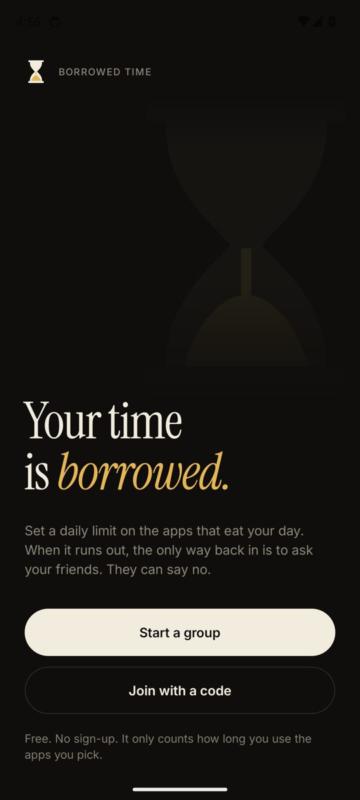
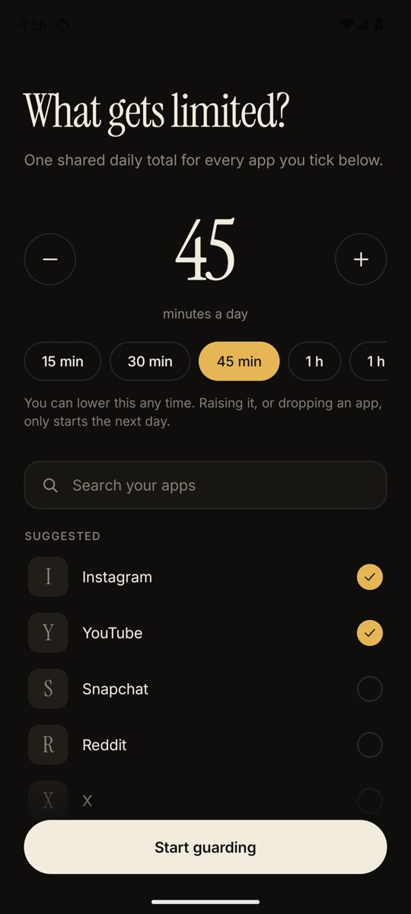
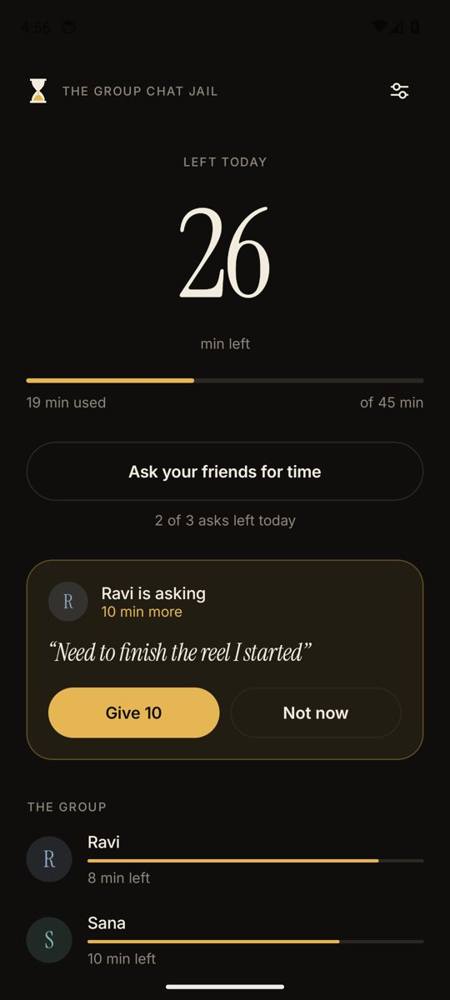
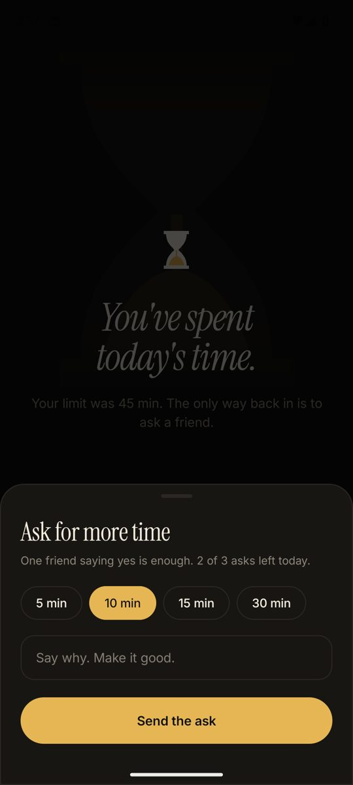

For groups of 3 to 6 friends
Your time
is borrowed.
Pick the apps that eat your day and a daily total. When it is gone, those apps are paused. The only way back in is to ask your friends, and one of them has to say yes.
Download for AndroidTry the rules here
Free. No sign-up. Android 8.0 or newer. MIT licensed.

Start or join
Pick apps and a total
Friends see each other
Ask to get back in
Four rules. No settings to argue with.
- One shared daily total. Tick Instagram, YouTube, Reddit, anything. One number covers them all.
- When it is spent, it is spent. A pause screen covers the apps for the rest of the day.
- Ask, up to three times a day. Choose 5, 10, 15 or 30 minutes and say why.
- One yes is enough. Anyone else in the group can give it. Nobody can approve their own ask. When the extra minutes run out, the apps pause again.
Try the rules
A simulation of the app's logic, not the app. Nothing here is sent anywhere.
Left today
20 min
You've spent today's time.
Your friend, Sana
You are asking 10 min more
"Need to finish the reel I started"
How it works
The app reads foreground time from Android's usage log, the same source Digital Wellbeing uses. It cannot see what is inside Instagram or YouTube. A small foreground service watches which app is in front and shows the pause screen when the total is spent.
Groups sync through a Supabase Postgres database. Every action goes through a few functions that check a per-device secret. The tables are not exposed. The group sees your name, your limit, your time used today, how many apps you limit, whether the guard is running and when your phone last checked in. Nothing else leaves the phone.
Lowering your limit applies at once. Raising it, or dropping an app, starts at the next midnight, so you cannot dodge the guard mid-day.
Honest limits
This is a trust-based app for friends. It is not a lock.
- You can uninstall it or force-stop it. Your friends see "Guard silent" after ten minutes and "Left the group" for 48 hours.
- The pause screen is an overlay, not a system lock.
- Asks reach a friend on their next check-in: every 15 seconds with the screen on, every five minutes with it off. There is no push service, so a sleeping phone can be slower.
- Someone with two phones can pose as two members.
- Some phone makers kill background apps. Turn off battery optimisation for Borrowed Time if the guard stops.
- It has been tested on an emulator and by unit tests. It has not yet had a long run on real phones, and newer Android versions are only checked on an emulator. The phone test checklist is in the repo.